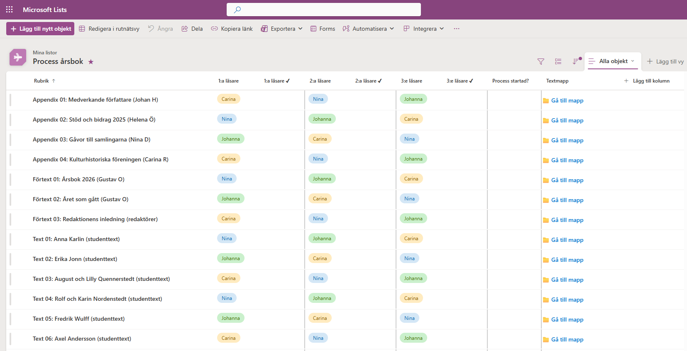
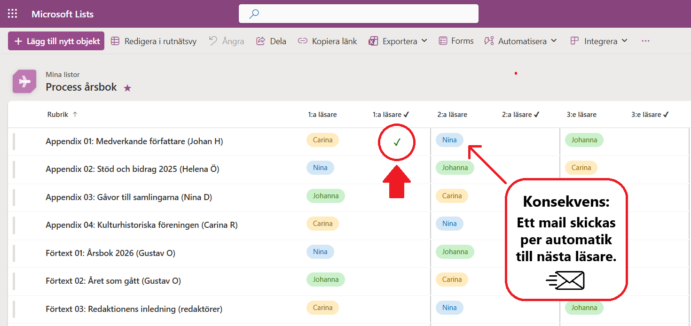

Denna lista – klicka på bilderna nedan för att förstora – är navet i vårt granskningsarbete. Systemet sköter automatiskt aviseringar via e-post så att rätt person alltid vet när det är dags att agera.
I listan framgår tydligt vem som är utsedd som första (och andra och tredje) läsare till varje text. På varje rad finns också en direktlänk till aktuell mapp, där texten ligger.
När du har klarmarkerat ditt arbete i listan, då händer två saker (se bild nedan):
Du kan luta dig tillbaka och göra något annat viktigt. 😀 Ett mail går iväg till nästa person med innehållet "Nu är det din tur att granska texten".
tills tredje utsedd läsare har klarmarkerat, för då skickas en notis till mig (Johan) med beskedet att "Nu har alla korrläsare granskat [den här texten]".
| Steg | Handling | Konsekvens |
|---|---|---|
| 1. Uppstart | Johan startar processen | 📧 1:a läsare får notis. |
| 2. Granskning 1 | 1:a läsare klarmarkerar ✔ | 📧 2:a läsare får notis. |
| 3. Granskning 2 | 2:a läsare klarmarkerar ✔ | 📧 3:e läsare får notis. |
| 4. Granskning 3 | 3:e läsare klarmarkerar ✔ | 📧 Johan får notis. |